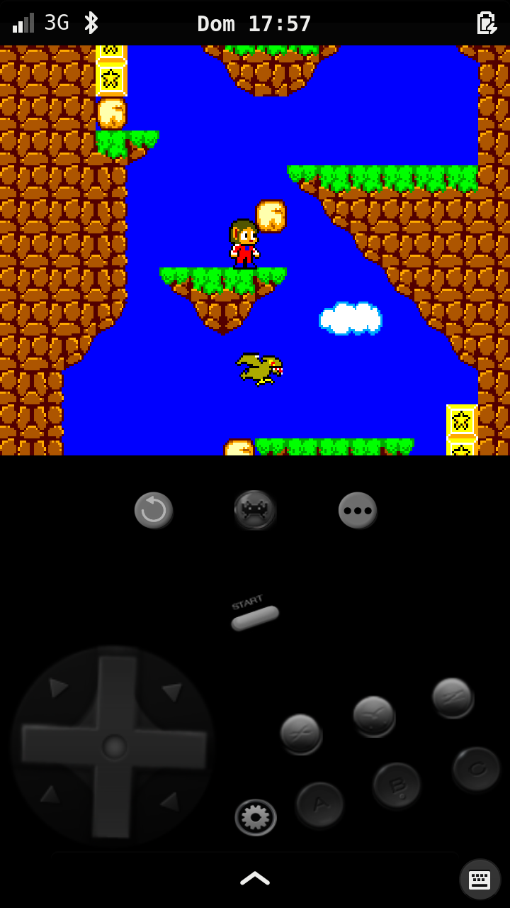
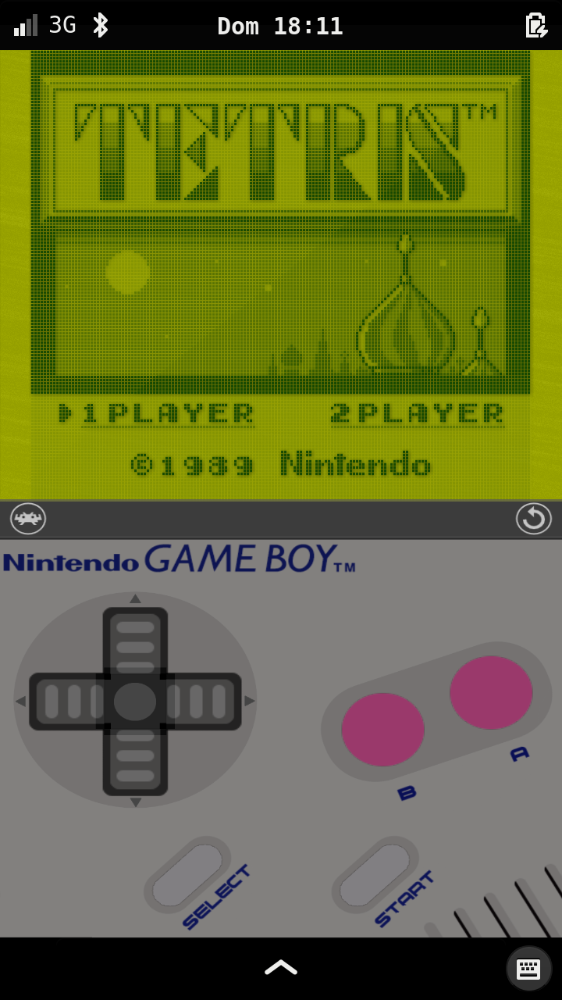
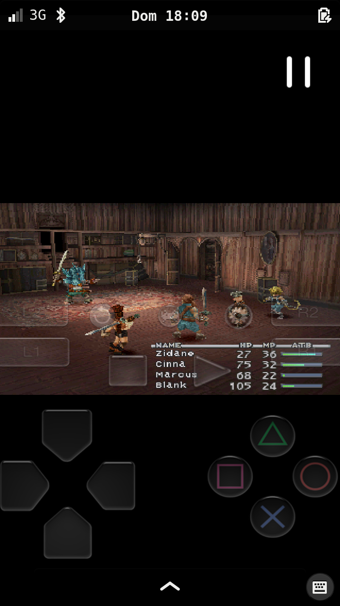

RetroArch
Contents
Installation
You can install RetroArch from the Alpine repo:
$ sudo apk add retroarch
Menu
RetroArch by default uses the desktop menu. If on mobile device you can use a mobile friendly menu driver called glui. You can set it in retroarch.cfg (~/.config/retroarch/retroarch.cfg) with:
menu_driver = "glui"
Phosh terminal keyboard seems not working properly to navigate the menu, here are some buttons correspondence:
ok
|
←
|
|---|---|
down
|
√
|
up
|
× (Multiplication sign)
|
left
|
π
|
right
|
τ
|
toggle fullsceen
|
F7
|
exit
|
0
|
Touchscreen
To enable touchscreen on RetroArch menu the following settings must be set in retroarch.cfg:
menu_mouse_enable = "false"
menu_pointer_enable = "true"
In case you're on a scaled display, you have to specify the scale factor in retroarch.cfg:
input_touch_scale = "2"
As of writing, input_touch_scale is only available in postmarketOS edge.
Cores
| WARNING: Launching roms from RetroArch frontend doesn't always works as expected, for this reason it is recommended to launch games from command-line |
These are the tested cores so far, if you manage to successfully test a core please add it to the list so everyone can have an idea of what can be potentially executed.
A list of installable cores can be found here: https://pkgs.alpinelinux.org/packages?name=libretro*&branch=edge
Overlay assets and configurations can be found here: https://github.com/libretro/common-overlays Shader assets can be found here: https://github.com/libretro/common-shaders
You can git clone them directly to your ~/.config/retroarch/overlay and ~/.config/retroarch/shaders folders directly.
Sega Master System
| Genesis Plus GX | ||
|---|---|---|
| Installation |
sudo apk add libretro-genesis-plus-gx
|
 |
| Retroarch overlay |
~/.config/retroarch/overlay/gamepads/genesis/genesis.cfg
|
|
| Shader |
~/.config/retroarch/shaders/shaders_glsl/crt/crt-easymode.glslp
|
|
| Command-line | ||
retroarch --set-shader "shaders_glsl/crt/crt-easymode.glslp" -L /usr/lib/libretro/genesis_plus_gx_libretro.so -c ~/.config/retroarch/retroarch.cfg --appendconfig custom.cfg YOUR_ROM
|
||
| custom.cfg | ||
input_overlay = "~/.config/retroarch/overlay/gamepads/genesis/genesis.cfg" # Custom aspect ratio and game viewport size/position params aspect_ratio_index = "23" custom_viewport_width = "720" custom_viewport_height = "578" custom_viewport_x = "0" custom_viewport_y = "0" |
||
{kind=link}
Gameboy
| Gambatte | ||
|---|---|---|
| Installation |
sudo apk add libretro-gambatte
|
 |
| Retroarch overlay |
~/.config/retroarch/overlay/gamepads/genesis/genesis.cfg
|
|
| Custom overlay | ZilogZ92 custom overlays | |
| Shader |
~/.config/retroarch/shaders/shaders_glsl/handheld/gameboy.glslp
|
|
| Command-line | ||
retroarch --set-shader "shaders_glsl/handheld/gameboy.glslp" -L /usr/lib/libretro/gambatte_libretro.so -c ~/.config/retroarch/retroarch.cfg --appendconfig custom.cfg YOUR_ROM
|
||
| custom.cfg | ||
# ZilogZ92 Gameboy overlay input_overlay = "./overlay/gb_big.cfg" # Custom aspect ratio and game viewport size/position params aspect_ratio_index = "23" custom_viewport_width = "720" custom_viewport_height = "578" custom_viewport_x = "0" custom_viewport_y = "0" |
||
{kind=link}
PlayStation
| PSCX Rearmed | ||
|---|---|---|
| Installation |
sudo apk add libretro-pcsx-rearmed
|
 |
| Retroarch overlay |
~/.config/retroarch/overlay/gamepads/psx/psx.cfg
|
|
| Command-line | ||
retroarch -L /usr/lib/libretro/pcsx_rearmed_libretro.so -c ~/.config/retroarch/retroarch.cfg --appendconfig custom.cfg YOUR_ROM
|
||
| custom.cfg | ||
input_overlay = "~/.config/retroarch/overlay/gamepads/psx/psx.cfg |
||
| Comments | Please follow PSCX Rearmed instructions, this emulator may need PSX bin files. Buggy on paella, low FPS. | |
{kind=link}
Troubleshooting
RetroArch is highly configurable and allows some tweaks to increase performance. Please, if you find some share them here.
Buggy audio
By default RetroArch set audio driver to ALSA. This may result in buggy audio. I had to change it to pulse to have a smooth audio:
audio_driver = "pulse"
If this doesn't solve the audio issue it may be that the device is not powerful enought to emulate the game/platform under some conditions (overlays, shaders). Enabling video threading can be a possible solution:
video_threaded = "true"
Related
- RetroArch#12213 upstream patch to add input_touch_scale
- aports!20315 backport of the patch to Alpine edge
- wiki#60 discussion of this wiki page